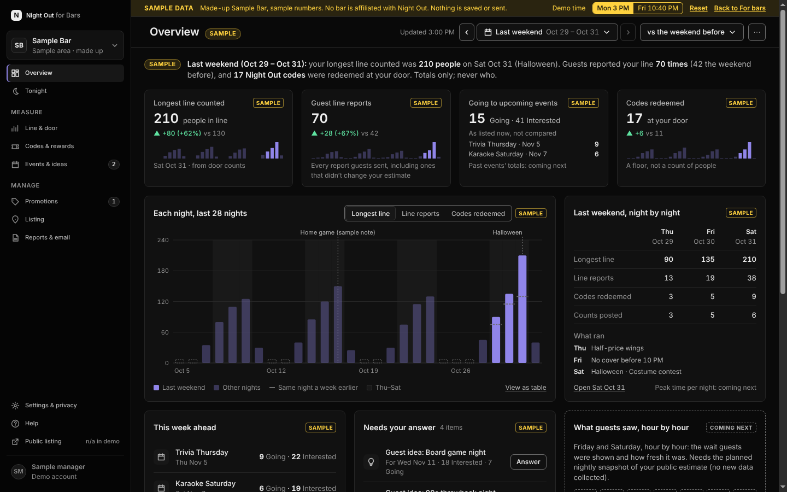

Night Out for Bars
See what guests are told about your line, and put your events in front of them.
A website for bar teams. Your line estimate as guests see it, the nights guests reported your line, the events they plan to go to, the theme nights they asked for, and the Night Out codes redeemed at your door. Totals only. Never who.
The demo runs on a made-up bar with sample numbers. No sign-up. The real dashboard is invite-only: how access works. Being listed in Night Out doesn’t mean a bar is affiliated with Night Out.
- Made for the Monday reviewLast weekend, night by night, on a laptop in about 15 minutes.
- An estimate nobody can buyEvery guest sees the same estimate. You can’t pay to change or hide it, and you can report one that looks wrong.
- Totals, never peopleNo names, no accounts, no locations. We don’t sell guest data.

Three things you can do from Monday
Your line
See your line the way guests do
The estimate guests see right now, last night hour by hour, and every night’s longest line and line reports for the last four weeks.
Whole weekends hour by hour: coming nextSlow nights
Put your events and promotions in front of guests
Send a promotion and we check it against our listing rules before guests see it. See how many guests are Going and Interested for each event.
Guest ideas
Run the theme nights guests asked for
Guests propose nights for your bar. You see the idea and how many are interested, then say yes or no. Never who asked.
What the dashboard shows, and what it never shows
You see
- Totals per night: longest line counted, line counts posted, guest line reports, codes redeemed
- Tonight’s codes: reward, time and the last 4 characters
- Going and Interested totals for your events
- Guest ideas for your bar, without who proposed them
The dashboard never shows
- Names, emails, accounts or handles
- Who is going, who is interested, or who proposed an idea
- Repeat guests, locations, ages, schools or photos of people
- Other bars’ numbers
Your weekend, in your inbox every Monday
The numbers are in the email itself, so you don’t have to sign in to see how the weekend went. No tracking pixels and no tracked links. One click to stop.
Planned. It needs an email service, which we haven’t chosen yet.
Sample Bar · your weekend
| Longest line counted (Sat Oct 31, Halloween) | 210 vs 130 |
| Guest line reports | 70 vs 42 |
| Codes redeemed at your door | 17 vs 11 |
| Needs your answer | 2 ideas · 1 promotion |
Totals only; we never share who.
How it works
- We confirm it’s youEmail us from your bar. We check you run it, then create your accounts. There’s no sign-up form.
- You turn on two-step sign-inA password plus a code from an authenticator app, set up with us on a short call.
- Your numbers start the first nightAs soon as your door staff post a line count or a guest reports your line.
Questions bars ask
Can I change my estimate?
You can’t edit, hide or pay to change it. Your door staff’s line counts feed it like ours, under the same rules. If it looks wrong, report it and we check it.
Do you sell guest data?
No. We don’t sell guest data, and we never give bars or advertisers anything that identifies a guest.
How many people did Night Out bring me?
We don’t track people. We show how many Night Out codes your staff redeemed. That’s a floor: guests who came without a code aren’t counted.
Does my door person have to type codes on a Friday?
Only when a guest shows one. A check takes a few seconds on the staff page on a phone.
Do I need the app?
No. The dashboard is a website for a computer. Door staff use a separate staff page on a phone.
Does it cost anything?
Free during the pilot.
Is it me, or the whole street?
Just your bar. We never show you another bar’s own numbers.
Can I see who was in line?
No. Totals only, by design.
See it on a made-up bar first
The demo runs on Sample Bar. Nothing you do there is saved or sent.
If your bar is already listed
Night Out shows guests near Easton Ave in New Brunswick, NJ an estimate of your door line. Here's how to fix your details, list events and deals, or talk to us.
Contact
Email our support address (published at launch) and start the subject line with "Bar:" and your bar's name.
Please write from an email address on your bar's website or social accounts, so we can confirm it's you.
What your listing shows
- Your bar's name, address and map location. These are public facts.
- Your hours, with their source and the date we checked them.
- The current line estimate, with its source and age. How estimates work.
- Events and deals, only if you approved them.
- A drawing we made. We don't use your logo or photos unless you give us written permission.
Being listed doesn't mean you're affiliated with Night Out or endorse it, and the app says so.
Fix your details
Email us with what's wrong and what's right, for example new hours, a moved entrance, or a closure. A link to your own website or post showing the change helps. We aim to fix confirmed corrections within 1 business day, and faster on busy nights.
You can also use Report a problem on your bar's page in the app.
If you think an estimate is wrong
Tell us the date, the time and what you saw. We'll check where the estimate came from. If a report broke our rules, we remove it. We won't change an estimate just because a bar asks, and bars can't hide or delete guest reports. No one can pay us to change an estimate or where a bar appears when guests sort by shortest line.
The best way to keep your estimate accurate is to post door counts yourself (see below).
Events and deals
We list your events and deals only with your approval, and you can withdraw them at any time.
- Email us the details: a short title (up to 60 characters), terms (up to 280 characters), start and end times, cover if any, and the age rule (for example "21+, valid ID at the door").
- We check it against the rules below and reply.
- Once approved, it shows on your bar's page until it ends.
Our rules for deals and events
- Every drink price says "Price set by [your bar]. Valid only at [your bar]."
- Drink prices must be at or above your cost. No "was" prices.
- No 2-for-1 or multi-drink alcohol offers, no unlimited drinks or open bars, no bigger pours for the same price, and no free items for buying alcohol.
- No prices or entry rules based on gender.
- "Non-alcoholic" means no alcohol, THC or hemp.
- You set the age rule for each event. Contests must be open only to people 21+, with no purchase needed and no alcohol prizes.
We may turn down anything that doesn't follow these rules. Our rules don't replace yours: as the license holder, you're responsible for making sure your deals and events follow New Jersey law and ABC rules.
Post door counts
Your door staff can post a line count and door status (moving, paused, at capacity or closed) from our staff console on a phone. Ask us for accounts. We create them, and you tell us when someone leaves so we can turn their account off.
- Counts from your door show as "door staff" to guests, never with a person's name.
- We never pay, tip or give anything to bar staff for posting counts.
- Post only what you actually see at the door.
Ask to be removed
Email us from an address we can confirm is your bar's. We'll take down your events and deals the same day, and reply about your listing within 2 business days.
Your logo and photos
We use our own drawings. If you'd like your photo or logo shown, we'll need written permission from you, and from the photographer if someone else took it.